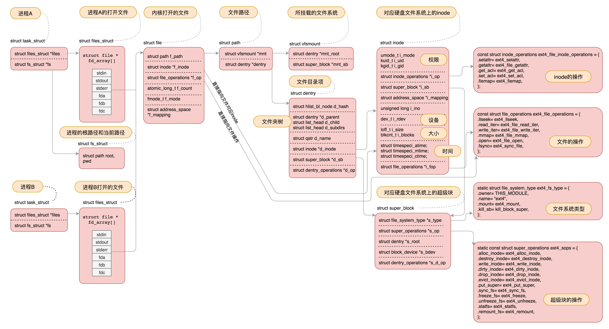
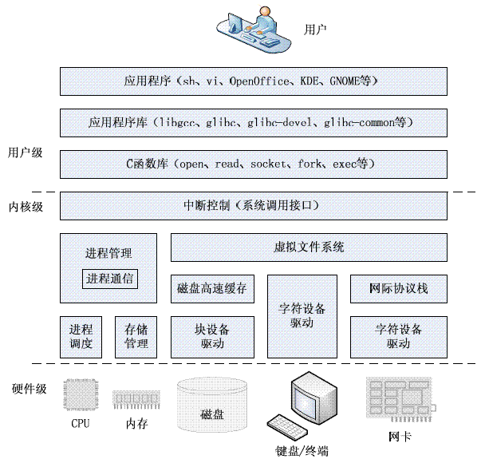
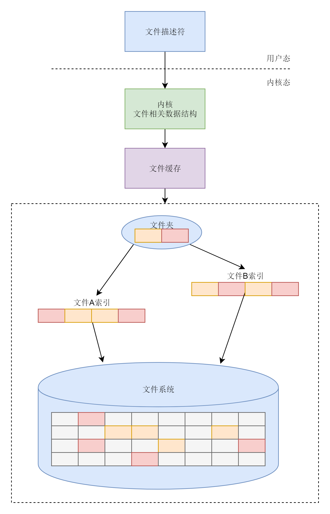

- 01 开篇介绍
- 03 学习路径
- 04 认识 Linux
- 05 快速上手 Linux 命令
- 05 系统调用
- 06 x86 体系架构
- 07 Linux 启动过程
- 08 内核初始化
- 09 系统调用
- 10 进程
- 11 线程
- 12 进程数据结构
- 13 进程数据结构（中）
- 加餐（一）学习攻略
- 14 进程数据结构（下）
- 15 调度（上）
- 16 调度（中）
- 17 调度（下）
- 18 进程的创建
- 19 线程的创建
- 20 内存管理（上）：规划进程内存空间布局
- 21 内存管理（下）
- 22 进程空间管理
- 23 物理内存管理（上）
- 24 物理内存管理（下）
- 25 用户态内存映射
- 26 内核态内存映射
- 27 文件系统
- 28 硬盘文件系统
01 开篇介绍
开篇词就是总结了接下来要学习的东西。总的来说，这门课有以下亮点：
- 有深度（其中涉及到 Linux 内核源码解析）
- 有广度（从 Linux 基础，谈到内核，到虚拟化，到容器、集群、数据中心操作系统等）
- 有趣味（类比于一家公司，操作系统是这家公司的老板）
- 图文并茂
开篇放出了一张 Linux 操作系统全景图（深入到代码），如下：

这张图展示了进程、文件、文件系统、硬盘之间的一个关系（Linux的哲学之一就是一切皆文件），这里面涉及到内核代码结构，其实就是一个个的数据结构拼接起来，想象一下，操作系统那么多组件，怎么样很好地管理这些组件，就是把他们定义成一个个的数据结构，然后有关系的就连接起来。
03 学习路径
一图胜千言

04 认识 Linux
从电脑组装说起。一台电脑硬件上来说至少应该包括以下组件，才能满足我们个人的使用需求。

光有这些硬件设备也玩不转一台电脑，必须要有一个类似于大脑的东西来指挥这些硬件才行，这个大脑就是操作系统。
操作系统要管理不同的硬件设备，就需要有不同的模块组件，就像一个组织需要设定几个不同的负责人一样。从功能和管理对象上说，可以分为以下几大类（操作系统体系结构图）：

上面这幅图关注点在于内核态，对于完整的操作系统，还应该包括用户态，以及用户态和内核态的交互模块，下面这幅图包含了这一切，而且还包括了硬件部分，非常完整：

内核代码
如何找 Linux 内核代码？
Linux 内核源码链接：
https://www.kernel.org/
在里面找到 kernel/git/torvalds/linux.git 即可下载
推荐一个 在线阅读源码 的网站（非常赞）：
https://elixir.bootlin.com/linux/latest/source
内核代码结构如何体现出上面的几大子系统的？
以 Linux 3.0 为例看看它的代码结构：
| 目录 | 描述 |
|---|---|
| arch | 包含和硬件体系结构相关的代码，每种平台占一个相应的目录，如 i386、 ARM、PowerPC、MIPS 等。 |
| block | 块设备驱动程序 I/O 模块。 |
| crypto | 常用加密和散列算法（如 AES、SHA 等），还有一些压缩和 CRC 校 验算法。 |
| Documentation | 内核源码文档 |
| drivers | 设备驱动程序，每个不同的驱动占用一个子目录，如 char、block、net、 mtd、i2c 等。 |
| firmware | 使用某些驱动程序而需要的设备固件 |
| fs | vfs 和 支持的各种文件系统，如 EXT、FAT、NTFS、JFFS2 等。 |
| include | 内核 头文件，与系统相关的头文件被放置在 include/linux 子目录下 |
| init | 内核引导和初始化代码 |
| ipc | 进程间通信的代码 |
| kernel | 内核的最核心部分，包括进程调度、定时器等，而和平台相关的一 部分代码放在 arch/*/kernel 目录下 |
| lib | 库文件代码，通用内核函数 |
| mm | 内存管理子系统代码，和平台相关的一部分代码放在 arch/*/mm 目录下 |
| net | 网络子系统相关代码，实现了各种常见的网络协议 |
| samples | 示例，示范代码 |
| scripts | 编译内核所用的脚本文件 |
| security | Linux 安全模块， 主要包含 SELinux 模块。 |
| sound | 音频子系统， ALSA、OSS 音频设备的驱动核心代码和常用设备驱动。 |
| usr | 早期用户空间代码（所谓的initramfs）， 实现了用于打包和压缩的 cpio 等 |
| tools | 在 Linux 开发中有用的工具 |
| virt | 虚拟化基础结构 |
05 快速上手 Linux 命令
用户名和密码
- 配置 root 密码：
passwd或passwd root（passwd <user>） - 创建一个新的用户：
useradd jay - 创建一个新的用户并加到某个组里：
useradd jay -g <gid> /etc/passwd和/etc/group中能够看到用户密码和用户组的信息
浏览文件
ls -l
drwxr-xr-x 6 root root 4096 Oct 20 2017 apt
-rw-r--r-- 1 root root 211 Oct 20 2017 hosts
- 第一个字段中的第一个字符
-表示普通文件，d表示目录文件，l表示连接文件 - 接着后面 9 个字符表示模式（权限位），前面 3 个是所属用户的读写执行权限，中间 3 个是用户所属组的，后面 3 个是其他用户的。改变权限使用
chmod 711 <file> - 第二个字段是硬链接数目
- 第三个字段是所属用户
- 第四个字段是所属用户组
- 第五个字段是文件大小
- 第六个字段是文件被修改的日期
- 最后是文件名
chmod 改变文件权限，chown 改变所属用户，chgrp 改变所属组。
# 将文件 file.txt 的拥有者改为 root，这个命令需要有超级用户权限才能执行，所以我们在命令之前加上sudo
sudo chown root file.txt
# 改变文件的拥有组为root组
sudo chgrp root file.txt
# 将文件的所属组由 root 改为 tim
chgrp -v tim file.txt
安装软件
相对于 Windows 的 exe、zip 等包，Linux 常用有 rpm（Centos 系）、deb（Ubuntu 系） 和 tar.gz 等包。
rpm和deb
# centos rpm
rpm -i jdk-XXX_linux-x64_bin.rpm
# ubuntu deb
dpkg -i jdk-xxx_linux-x64_bin.deb
# 查看安装软件列表
rpm -qa
dpkg -l
# 翻页
rpm -qa | more
rpm -qa | less
# 加搜索
rpm -qa | grep jdk
dpkg -l | grep jdk
# 删除
rpm -e
dpkg -r
- Linux 软件管家：
yum和apt-get
# 搜索软件
yum search jdk
apt-cache search jdk
# 安装
yum install java-11-openjdk.x86_64
apt-get install openjdk-9-jdk
- 配置软件源：国内常用是
阿里源和163源。（用到时搜索即可）
centos：/etc/yum.repos.d/CentOS-Base.repo
ubuntu: /etc/apt/sources.list
- 包下载和压缩解压缩
# 下载
wget
# 压缩解压缩
yum install zip.x86_64 unzip.x86_64
apt-get install zip unzip
unzip <xx.zip>
tar zxvf jdk-XXX_linux-x64_bin.tar.gz
- 运行程序
# 01 直接运行
<command> 或者 <./command>
# 02 后台运行
nohup <command> >out.file 2>&1 &
# 后台进程关闭
ps -ef |grep 关键字 |awk '{print $2}'|xargs kill -9
# 03 以服务的方式运行 /lib/systemd/system
# 比如 mysql
apt-get install mysql-server # 安装
systemctl start mysql # 启动
systemctl enable mysql # 设置开机启动
# centos 中 MySQL 是 MariaDB。/usr/lib/systemd/system/
开关机
# 关机
shutdown -h now
poweroff
# 重启
reboot
一图总结之

05 系统调用
进程相关系统调用：
- fork：创建子进程，返回两个值，如果是 0，表示子进程，如果 >0 表示父进程，值是子进程的 ID。
- execve：创建出的子进程执行的系统调用（有一套函数集）。
- waitpid：父进程监听子进程的执行情况。
通过如下方式查询更加详细的信息:
$ps -o pid,pgid,ppid,sid,tty,comm
(tty表示控制终端）
进程地址空间：

进程内存空间分配系统调用：
- brk：当分配内存量小的时候（具体是 128K）使用；
- mmap：当分配内存量大于 128K 时使用，这么做的目的是避免 内存碎片 的问题。参考这里
异常与信号处理相关系统调用：
- kill：用户进程发送一个退出信号给另一个进程
- sigaction：信号处理函数（无视(ignore)信号、默认(default)操作、自定义操作）
$man 7 signal 查阅更多的信号。一些常用的信号：
SIGINT当键盘按下CTRL+C从 shell 中发出信号，信号被传递给shell中前台运行的进程，对应该信号的默认操作是中断 (INTERRUPT) 该进程。SIGQUIT当键盘按下CTRL+\从 shell 中发出信号，信号被传递给shell中前台运行的进程，对应该信号的默认操作是退出 (QUIT) 该进程。SIGTSTP当键盘按下CTRL+Z从 shell 中发出信号，信号被传递给shell中前台运行的进程，对应该信号的默认操作是暂停 (STOP) 该进程。SIGCONT用于通知暂停的进程继续。SIGALRM起到定时器的作用，通常是程序在一定的时间之后才生成该信号。
进程间通信系统调用：
- 消息队列：msgget（创建）、msgsnd（发送）、msgrcv（接收）
- 共享内存（通信量大）：shmget（创建）、shmat（映射共享内存）
- 信号量（资源访问竞争）：sem_wait（占用资源）、sem_post（释放资源）
- 管道（无名管道和命名管道）
- Socket
- 参考这里
C 函数库（glibc）和系统调用的关系：
C 函数库是对相关系统调用函数的进一步封装，目的是以一种更友好的方式供上层用户的调用。系统调用更像是组成一个汉字的 笔画 ，而库函数则像 偏旁部首 。比如 glibc 中的 printf 函数就会调用 sys_open、sys_mmap、sys_write、sys_close 等系统调用函数。malloc 函数也会进一步调用到 sys_brk 等函数。
Tips：
$man 2 syscalls 可以查看所有的系统调用，$man 2 read 查看系统调用 read 的详细说明。
一图总结

06 x86 体系架构
硬件图结合计算机的逻辑图：

CPU 和 内存如何配合工作：
CPU 包括：
- 运算单元：如加减乘除
- 数据单元：CPU 内部的缓存和寄存器组
- 控制单元：指令获取、控制
- 指令指针寄存器：执行下一条指令在内存中的地址
- 指令寄存器

x86 CPU 组件放大图：

运算单元：
- 通用寄存器
控制单元：
- IP：指令指针寄存器
- CS： 代码寄存器
- DS：数据寄存器
- SS：栈寄存器
一图总结之：

07 Linux 启动过程
1 打开电源，从主板上的 BIOS 读取其中存储的程序，这个程序知道主板连接哪些硬件（硬盘、网络接口、键盘、串口、并口），BIOS 会检查以哪种方式启动（软盘、光盘、硬盘）。（BIOS 存储在 ROM 只读区）

2 读取启动盘中的前 512 个字节，也就是 MBR （主引导扇区）
3 MBR 会从设备的某一个分区来转载 引导加载程序 （BootLoader） ，BootLoader 含有 OS 相关的信息，比如 OS 内核，OS 内核所在的位置等。常用的 BootLoader 程序有 GRUB2 和 LILO 。
可以通过 grub2-mkconfig -o /boot/grub2/grub.cfg 来配置系统启动的选项。
4 BootLoader 接着会加载内核程序
具体地，它会安装 boot.img 、core.img 等镜像程序。其中 kernel.img 就是存放的 OS 内核程序。一般会有多个程序（多操作系统），我们选择其中一个。

5 假如选择 Linux内核，内核会预留一部分自己的内存空间，然后通过驱动程序检测哪些计算机硬件可用，然后会启动一个 init 进程，它是 Linux 内核中的 1 号进程（Linux 没有 0 号进程），至此，便完成启动阶段做的事，接下来就交给 init 进程来管理。
6 init 进程会运行一系列的初始脚本（shell脚本）：
设置计算机名称，时区，检测文件系统，挂载硬盘，清空临时文件，设置网络……
至此，整个 OS 便准备好了，init 启动登录程序，输入用户名、密码便可自行玩耍了。
附：
grub2 命令的使用手册见：
http://www.cnblogs.com/f-ck-need-u/p/7094693.html
08 内核初始化
从源码上来讲，内核初始化从 函数 start_kernel 开始的，相当于内核的 main 函数，在文件 init/main.c 中。它总的要进行几件事：
- 任务初始化
- 中断初始化
- 内存管理初始化
- 调度器初始化
- 其他（如进程线程）初始化

init_task 产生 0 号进程，这是唯一一个没有通过 fork 或者其他 kernel_thread 产生的进程，是进程列表的第一个。
rest_init 会产生两个进程，一号进程和二号进程来对用户态和内核进行初始化。
CPU 的分层权限限制，导致用户态和内核态的访问需要采用系统调用的手段：

系统调用总的一个过程基本上是：

09 系统调用
用户态访问内核：
- 系统调用
- C 函数库 glibc（最终也是调用系统调用函数）
在 glibc 源代码中，有个文件 syscallls.list，里面列着所有 glibc 的函数对应的系统调用。
# File name Caller Syscall name Args Strong name Weak names
open - open Ci:siv __libc_open __open open
Glibc 还有一个文件 syscall-tmplate.S ，使用 宏，定义了系统调用的调用方式：
T_PSEUDO (SYSCALL_SYMBOL, SYSCALL_NAME, SYSCALL_NARGS)
ret
T_PSEUDO_END (SYSCALL_SYMBOL)
#define T_PSEUDO(SYMBOL, NAME, N) PSEUDO (SYMBOL, NAME, N)
这里有一个 宏 PSEUDO，对于任何一个系统调用，都会调用到这个 宏：
#define PSEUDO(name, syscall_name, args) \
.text; \
ENTRY (name) \
DO_CALL (syscall_name, args); \
cmpl $-4095, %eax; \
jae SYSCALL_ERROR_LABEL
32 位系统调用过程和 64 位还有些许不同，我们直接看 64 位的：
接着，开始陷入内核，OS 会将系统调用名称转换为系统调用号，放到寄存器 rax 中，然后执行 syscall，然后通过一种特殊模块寄存器（MSR）来完成系统调用的功能，它会将系统调用相关的指令压入内核：

然后通过一个 系统调用表 找到相应的函数，进行执行。
系统调用表存放着所有的系统调用函数，对于 64位的系统，是定义在文件 arch/x86/entry/syscalls/syscall_64.tbl 中的（比如 open 是这样定义的）:
2 common open sys_open
通过寄存器 rax 中的系统调用号，就可以找到系统调用表中对应的系统调用函数，从而执行真正的内核函数，比如 open 对应内核函数为 sys_open。
10 进程
安装开发套件：(centos 7)
yum -y groupinstall "Development Tools"
程序文件具有 严格的格式 ：ELF（Executeable and Linkable Format）
ELF 是一种用于二进制文件、可执行文件、目标代码、共享库和核心转储的标准文件格式。
目标文件有三类（可通过 file 命令查看）：
- 可重定位的目标文件（.o 文件）
- 可执行的目标文件（.exe 文件）
- 可被共享的目标文件（.so 动态库文件）
从文本文件到二进制可执行文件的过程：

1、.o 文件时 ELF 的第一种文件类型，格式如下：

将 .o 归档为 .a 的静态库文件，使用命令 ar：
ar cr libstaticprocess.a process.o
- .text：存放编译好的二进制可执行代码
- .rodata：只读数据，例如字符串常量、const 的变量
- .data：已经初始化好的全局变量
- .bss：未初始化的全局变量
- .symtab：符号表，记录的事函数和变量
- .strtab：字符串表、字符串常量和变量名
编译的时候使用静态链接库：
gcc -o staticcreateprocess createprocess.o -L. -lstaticprocess
2、生成的二进制可执行文件为 ELF 的第二种格式。
静态链接库如果更新，那个多个引用的程序都要随之更新，效率低，因为出现动态链接库，可被多个程序共享。
3、动态链接库是 ELF 的第三种格式。共享对象文件。
gcc -shared -fPIC -o libdynamicprocess.so process.o
gcc -o dynamiccreateprocess createprocess.o -L. -ldynamicprocess
当一个动态链接库被链接到一个程序文件中的时候，最后的程序文件并不包括动态链接库中的代码，而仅仅包括对动态链接库的引用，并且不保存动态链接库的全路径，仅仅保存动态链接库的名称。
系统默认加载的路径是 /lib 和 /usr/lib，可以使用 LD_LIBRARY_PATH 来自定义动态库链接的路径。
export LD_LIBRARY_PATH = .
进程调用 exec -> load_elf_binary，最终将动态库加载的内存。
exec 函数：
- 包含 p 的函数（execvp, execlp）会在 PATH 路径下面寻找程序；
- 不包含 p 的函数需要输入程序的全路径；
- 包含 v 的函数（execv, execvp,execve）以数组的形式接收参数；
- 包含 l 的函数（execl, execlp, execle）以列表的形式接收参数； 包含 e 的函数（execve, execle）以数组的形式接收环境变量。

进程树：
所有进程都是由父进程 fork 过来的，往前追溯，会找到祖宗进程，也就是系统启动的 init 进程。

有些系统中，比如 centos ，/sbin/init 会被链接到 systemd。
一图总结之：

Tips:
查看 ELF 文件的工具：
- readelf：分析 ELF 文件的信息
- objdump：显示二进制文件信息
- hexdump：查看文件的 16进制编码
- nm：显示关于指定文件中符号的信息
11 线程
多线程程序的编译依赖于 libpthread.so
gcc thread.c -lpthread
普通线程的创建和运行过程：

多线程可访问的数据：
- 线程栈上的本地数据，比如函数执行过程中的局部变量。（
ulimit -a查看栈的大小） - 整个进程里共享的全局数据，比如全局变量
- 线程的私有数据
线程共享数据的保护问题：
- Mutex（互斥变量）
- 条件变量（一般和互斥锁配合使用）

12 进程数据结构
在内核中，进程和线程都是由一个数据结构 task_struct 来统一管理。

每个进程或线程定义一个这个结构，多个进程用链表连接起来。
其中，
任务 ID：
- pid：进程 id
- tgid：多个线程中主线程对应的进程 ID
- group_leader：多线程中主线程
信号处理：
/* Signal handlers: */
struct signal_struct *signal;
struct sighand_struct *sighand;
sigset_t blocked;
sigset_t real_blocked;
sigset_t saved_sigmask;
struct sigpending pending;
unsigned long sas_ss_sp;
size_t sas_ss_size;
unsigned int sas_ss_flags;
包括，
- blocked：阻塞暂不处理
- pending：尚等待处理
- sighand：正在被信号处理函数处理
任务状态：
值定义在 include/linux/sched.h 中，
/* Used in tsk->state: */
#define TASK_RUNNING 0
#define TASK_INTERRUPTIBLE 1
#define TASK_UNINTERRUPTIBLE 2
#define __TASK_STOPPED 4
#define __TASK_TRACED 8
/* Used in tsk->exit_state: */
#define EXIT_DEAD 16
#define EXIT_ZOMBIE 32
#define EXIT_TRACE (EXIT_ZOMBIE | EXIT_DEAD)
/* Used in tsk->state again: */
#define TASK_DEAD 64
#define TASK_WAKEKILL 128
#define TASK_WAKING 256
#define TASK_PARKED 512
#define TASK_NOLOAD 1024
#define TASK_NEW 2048
#define TASK_STATE_MAX 4096
所有定义的状态如下图所示：

其中，
- TASK_RUNNING：表示进程在时刻准备运行（并不是正在运行，当获得 CPU 时间片的时候进入运行）
- TASK_INTERRUPTIBLE：可中断的睡眠状态（浅睡眠），当信号来的时候，进程可被唤醒
- TASK_UNINTERRUPTIBLE：不可中断的睡眠状态（深睡眠），不可被信号唤醒，只能死等 I/O 操作完成，kill 也不行
- TASK_KILLABLE：可以终止的睡眠状态，上面的改良，可以响应致命信号
- TASK_WAKEKILL：在接收致命信号时唤醒进程
- TASK_STOPPED：进程收到 SIGSTOP、SIGINT、SIGTSTP 或者 SIGTTOU 后进入的状态
- TASK_TRACED：进程被 debugger 等进程监视，进程执行被调试程序所停止
- EXIT_ZOMBIE：进程结束首先进入的状态，如果父进程没有调用 waitpid() 函数的话，就成为 僵尸进程
- EXIT_DEAD 进程的最终状态
13 进程数据结构（中）
进程运行过程中一些统计量，可以更好地了解进程的工作情况：
u64 utime;// 用户态消耗的 CPU 时间
u64 stime;// 内核态消耗的 CPU 时间
unsigned long nvcsw;// 自愿 (voluntary) 上下文切换计数
unsigned long nivcsw;// 非自愿 (involuntary) 上下文切换计数
u64 start_time;// 进程启动时间，不包含睡眠时间
u64 real_start_time;// 进程启动时间，包含睡眠时间
进程的亲缘关系：
struct task_struct __rcu *real_parent; /* real parent process */
struct task_struct __rcu *parent; /* recipient of SIGCHLD, wait4() reports */
struct list_head children; /* list of my children */
struct list_head sibling; /* linkage in my parent's children list */
- parent：指向其父进程
- children：表示链表头部
- sibling：表示兄弟链表
整个关系如下图所示：

进程权限控制：
/* Objective and real subjective task credentials (COW): */
const struct cred __rcu *real_cred;
/* Effective (overridable) subjective task credentials (COW): */
const struct cred __rcu *cred;
- real_cred：谁能操作这个进程
- cred：这个进程能够操作谁
内存管理：
每个进程有自己的独立虚拟内存空间，用 mm_struct 表示：
struct mm_struct *mm;
struct mm_struct *active_mm;
文件与文件系统：
每个进程有一个文件系统的数据结构，和一个打开文件的数据结构：
/* Filesystem information: */
struct fs_struct *fs;
/* Open file information: */
struct files_struct *files;
加餐（一）学习攻略
三遍学习法+PPT笔记
第一遍学习：先读薄，不要在乎一城一池的得失，梳理主次矛盾，记录所有问题
第二遍学习：再读厚，把握主线，攻克各个问题（用 PPT 笔记法记录这个过程）
第三遍学习：再读薄，变成自己的东西，总体梳理知识点，可以用xmind思维导图，融汇贯通
14 进程数据结构（下）
用户态函数栈：
函数调用时的栈如下所示（32位）：从高地址到低地址，往下增长，上面是栈底，下面是栈顶。

在 64位的环境，EBP 变成了 RBP，ESP 变成了 RSP。
内核态函数栈：
进程用户态和内核态的联系用到如下结构：
struct thread_info thread_info;
void *stack;
其中，stack 即维护内核函数栈。

当用户态切换到内核态后，需要将用户态运行过程中的 CPU 上下文保存起来，其实是保存的 pt_regs 这个结构，
通过 task_struct 的 stack 指针，就可以找到内核栈：
static inline void *task_stack_page(const struct task_struct *task)
{
return task->stack;
}
通过 stack 就能很方便找到 pt_regs：
/*
* TOP_OF_KERNEL_STACK_PADDING reserves 8 bytes on top of the ring0 stack.
* This is necessary to guarantee that the entire "struct pt_regs"
* is accessible even if the CPU haven't stored the SS/ESP registers
* on the stack (interrupt gate does not save these registers
* when switching to the same priv ring).
* Therefore beware: accessing the ss/esp fields of the
* "struct pt_regs" is possible, but they may contain the
* completely wrong values.
*/
#define task_pt_regs(task) \
({ \
unsigned long __ptr = (unsigned long)task_stack_page(task); \
__ptr += THREAD_SIZE - TOP_OF_KERNEL_STACK_PADDING; \
((struct pt_regs *)__ptr) - 1; \
})
反过来，内核栈通过 thread_info 这个结构来找 task_struct，
struct thread_info {
struct task_struct *task; /* main task structure */
__u32 flags; /* low level flags */
__u32 status; /* thread synchronous flags */
__u32 cpu; /* current CPU */
mm_segment_t addr_limit;
unsigned int sig_on_uaccess_error:1;
unsigned int uaccess_err:1; /* uaccess failed */
};
其中 struct task_struct *task; 即是指向 task_struct，通常 current_thread_info()->task 来获取 task_struct。
一图总结：

15 调度（上）
指的是进程数量远超过 CPU 的数目，需要进行 CPU 调度执行。
进程包括两种：
- 实时进程
- 普通进程
实时进程的调度优先级比普通进程要高。优先级数值越低，优先级越高。
实时进程优先级范围：0-99
普通进程优先级范围：100-139
task_struct 中有一个成员变量，叫 调度策略 ：
unsigned int policy;
包括以下策略：
#define SCHED_NORMAL 0
#define SCHED_FIFO 1
#define SCHED_RR 2
#define SCHED_BATCH 3
#define SCHED_IDLE 5
#define SCHED_DEADLINE 6
其中，SCHED_FIFO（先来先服务） 、SCHED_RR（时间片轮流调度） 、SCHED_DEADLINE（根据 deadline 选择调度） 是实时进程调度策略，
剩余，SCHED_NORMAL（普通进程） 、SCHED_BATCH（后台进程）、SCHED_IDLE（空闲进程） 是普通进程调度策略。
通常最常用的调度算法是 普通进程使用的 完全公平调度算法：
用球装进口袋的例子来理解，球少的袋子多放点球，这样经过几轮，虽不能保证所有口袋球完全一样，但也差不多公平。
这个算法的底层实现是通过 红黑树 来实现的。
红黑树的每个节点记录一个 vruntime，vruntime 是虚拟运行时间，也就是进程时钟 tick 数，用来记录每个进程占用 CPU 的时间滴答数，以此保证公平。

总结：
一个 CPU 上有一个队列，即 CFS（公平调度队列），这实现上是一颗红黑树，树的每一个节点都是一个 sched_entity（调度实体），每个 `sched_entity 都属于一个 task_struct，task_struct 里有指针指向这个进程属于哪个调度类。在调度的时候，依次调用调度类的函数，从 CPU 的队列中取出下一个进程。

16 调度（中）
分为：主动调度和被动调度
进程上下文切换：
主要干两件事：一是切换进程空间，也即虚拟内存，二是切换寄存器和 CPU 上下文
主动调度的过程：
一个运行中的进程主动调用 __schedule 让出 CPU，在 __schedule 里会做两件事情，第一是选取下一个进程，第二是进行上下文切换，而上下文切换又分为用户进程空间切换和内核态的切换

17 调度（下）
抢占式调度：一个进程执行时间太长了，是时候切换到另一个进程了。

18 进程的创建
首先调用 fork 系统调用
--> sys_call_table --> sys_fork
--> _do_fork
--> copy_process # 第一件大事
--> dup_task_struct
--> alloc_task_struct_node # 分配 task_struct
--> alloc_thread_stack_node # 创建内核栈
--> arch_dup_task_struct # 调用 memcpy 将task_struct 进行复制
--> setup_thread_stack # 设置 thread_info
--> copy_creds
--> prepare_creds # memcpy 复制一份父进程的 cred
--> 设置进程运行统计量
--> sched_fork # 设置调度相关的变量
--> __sched_fork # 设置包括运行时间，进程状态，优先级，调度类
--> copy_files # 复制一个进程打开的文件信息
--> dup_fd # 复制文件描述符
--> file_fs # 复制一个进程的目录信息
--> copy_sighand # 初始化信号相关的变量
--> copy_mm # 复制内存空间，进程空间用 mm_struct 结构表示
--> wake_up_new_task # 第二件大事,试图唤醒创建的子进程
--> activate_task
--> enqueue_task # 激活进程
--> enqueue_task_fair # 如果是 CFS 的调度类，执行相应调度类
以上第一阶段的过程如以下图示所示：

19 线程的创建
和进程一样，线程的创建是由用户态和内核态共同完成的。
它们都要依托于一个数据结构 task_struct，下面看看线程具体创建就的过程：
从用户调用 pthread_create 开始，
1、设置线程属性参数
2、pthread 结构用户态维护线程
3、创建线程栈(ALLOCATE_STACK)
-
-
4、进入内核 调用 create_thread
5、调用 __clone
--> sys_call
--> _do_fork # 和进程不同，这里主要是对相关的 结构 做引用计数 +1，而不是复制。
下图总结了进程和线程创建的区别：

20 内存管理（上）：规划进程内存空间布局
操作系统管理的 三个方面：
- 物理内存的管理：物理内存地址只有内存管理模块能够使用
- 虚拟内存的管理：每个进程看到的都是独立的，互不干扰的虚拟地址空间
- 虚拟地址和物理的地址的映射管理：虚拟地址和物理地址通过页表结构关联起来
打印进程内存空间的布局的命令：
cat /proc/$pid/map
21 内存管理（下）
虚拟内存转到物理内存，需要用到两种机制：分段机制和分页机制。
分段机制：

大体思路是通过段基地址和段内偏移，将虚拟地址转换为物理地址。
分页机制：

通过页表目录项和页内偏移量，将虚拟地址转换为物理地址。
对于 64位，则页表目录更多，如下：

内存映射：将虚拟内存和物理内存映射起来，并且在内存紧张的时候可以换出到硬盘中。

22 进程空间管理
进程的内存空间管理来自于一个结构：
struct mm_struct **mm
其中，一个成员变量:
unsigned long task_size
定义了用户空间和内核空间的大小分界线。
对于 32 位系统，最大能够寻址 2^32=4G，其中用户态虚拟地址空间是 3G，内核态是 1G。
对于 64 位系统，虚拟地址只使用了 48 位。用户空间和内核空间大小都是 128T。
如下：

内存空间布局：

以上这些区域通过下面的结构描述：
struct vm_area_struct *mmap; /* list of VMAs */
struct rb_root mm_rb;
64位的内核空间布局：

整个过程，可以用下面的两幅图表示：
32位：

64位：

23 物理内存管理（上）
物理内存的组织方式，有两种：
- SMP：对称多处理器
- NUMA ：非一致内存访问

在 NUMA 结构中，把内存分成节点，把节点分成区域zone，区域又分为页，
页是组成物理内存的基本单位，页的数据结构是 struct page。
在Linux中，如果要分配比较大的内存，例如分配页级别的，可以使用伙伴系统。
几者之间的关系如下所示：

24 物理内存管理（下）
物理内存分 NUMA 节点，分别进行管理
伙伴系统将多个连续的页面作为一个大的内存块分配给上层。
小内存的分配使用 slub 分配器。它会从伙伴系统中申请大内存块切分成小块，分配给其他系统。
内存页面的换入换出会使用一个内核线程 kswapd，它会循环检查内存的使用情况，当内存充足的时候，它什么也不会做，当内存吃紧了，它会检查是否应该换出一些内存页。
常用的一个内存换出算法是 LRU，也就是最近最少使用。
用下面这个图总结：伙伴系统和 Slub 分配器：

25 用户态内存映射
内存映射：
- 物理内存和虚拟内存之间的映射
- 将文件中的内容映射到虚拟内存空间
内存映射通过一个 系统调用 mmap 来完成，内存映射区在内存结构中的位置如下所示：

当我们在申请内存时，如果申请的是小块内存，就用 brk，如果申请大块内存，就用 mmap。
mmap 依赖于页表项，页表由于一般都较大，所以只能放在内存中，这会导致访存的性能下降。
为了加快映射速度，引入 TLB 块表，TLB 存储在 Cache 中，存储的是页表项，可以直接通过虚拟地址找到物理地址。内存映射的时候，会首先查 TLB 表，块表中有映射关系，就直接转换为物理地址，如果没有，才会到内存中查询页表。
如果用户态访问没有映射的内存会引发缺页异常，分配物理页表、补齐页表。如果是 swap，则将 swap 文件读入，如果是文件映射，则将文件读入。

26 内核态内存映射
- vmalloc 和 kmap_atomic
- 内核的虚拟地址空间 vmalloc 区域用于映射
- kmap_atomic 临时映射
- 32 位, 调用 set_pte 通过内核页表临时映射
- 64 位, 调用 page_address→lowmem_page_address 进行映射
- 内核态缺页异常
- kmap_atomic 直接创建页表进行映射
- vmalloc 只分配内核虚拟地址, 访问时触发缺页中断, 调用
物理内存管理：
用户态内存分配：

内核态内存分配：
内存分配体系总图：

27 文件系统
文件系统的设计原则：
- 严格的组织形式，以块为单位进行存储
- 要有索引区
- 应该有缓存层，存放经常被读写的文件
- 以文件夹的形式组织，方便管理和查询
- linux 维护一套数据结构，保存哪些文件被哪些进程打开和使用
文件系统相关的命令：
fdisk -l
# 查看格式化和没有格式化的分区
mkfs.ext4 /dev/vdc
# 对磁盘进行格式化，vdc会建立一个分区，格式化为 ext4 文件系统的格式。
mount /dev/vdc1 / 根目录 / 用户 A 目录 / 目录 1
# 格式化的分区需要挂到某个目录下面，才能作为普通的文件系统进行访问
umount / 根目录 / 用户 A 目录 / 目录 1
# 卸载挂载
文件系统相关的系统调用：
文件相关：open, write, read, lseek, close
目录相关：opendir，readdir，closedir
文件属性由结构体 struct stat 来维护，由函数 stat，fstat，lstat来操作：
int stat(const char *pathname, struct stat *statbuf);
int fstat(int fd, struct stat *statbuf);
int lstat(const char *pathname, struct stat *statbuf);
struct stat {
dev_t st_dev; /* ID of device containing file */
ino_t st_ino; /* Inode number */
mode_t st_mode; /* File type and mode */
nlink_t st_nlink; /* Number of hard links */
uid_t st_uid; /* User ID of owner */
gid_t st_gid; /* Group ID of owner */
dev_t st_rdev; /* Device ID (if special file) */
off_t st_size; /* Total size, in bytes */
blksize_t st_blksize; /* Block size for filesystem I/O */
blkcnt_t st_blocks; /* Number of 512B blocks allocated */
struct timespec st_atim; /* Time of last access */
struct timespec st_mtim; /* Time of last modification */
struct timespec st_ctim; /* Time of last status change */
};

最后，用一幅图来总结之：

28 硬盘文件系统
硬盘结构：
https://static001.geekbang.org/resource/image/2e/d2/2ea68b40d928e6469233fcb4948c7cd2.jpg
Linux 主流文件系统格式：ext 系列，ext3, ext4
硬盘分成相同大小的块，一块的大小是扇区大小的整数倍，默认是 4K，格式化的时候，可以设定。
为了更好的管理文件，使用一个结构 inode 来维护，inode 保存一个文件的基本信息，提供索引机制，方便查找和管理。
struct ext4_inode {
__le16 i_mode; /* File mode */
__le16 i_uid; /* Low 16 bits of Owner Uid */
__le32 i_size_lo; /* Size in bytes */
__le32 i_atime; /* Access time */
__le32 i_ctime; /* Inode Change time */
__le32 i_mtime; /* Modification time */
__le32 i_dtime; /* Deletion Time */
__le16 i_gid; /* Low 16 bits of Group Id */
__le16 i_links_count; /* Links count */
__le32 i_blocks_lo; /* Blocks count */
__le32 i_flags; /* File flags */
......
__le32 i_block[EXT4_N_BLOCKS];/* Pointers to blocks */
__le32 i_generation; /* File version (for NFS) */
__le32 i_file_acl_lo; /* File ACL */
__le32 i_size_high;
......
};
其中，i_block[] 定义了一个文件被划分了多少块，每一块在哪里这些信息。
文件在文件系统中使用 inode 来描述, 每个 inode 中都含有一些列的数据块
- 对于普通文件: 数据块中保存的是文件数据
- 对于文件夹: 数据块中保存的是子文件的文件项
- 为了加快文件夹中文件的搜索速度, Linux 通过索引模式, 可以使用文件名的散列快速定位到文件的位置
文件的组织
- Linux 中将磁盘的块分成一个个的块组, 每个块组由一个块组的位图和对应的数据块描述, 最大可描述 128M 的空间
- 每个块组有其对应的块组描述符, 描述符之间形成一个链表
- 为了更好地管理块组, Linux 通过元块组来描述块组
- 一个元块组中由 64 个块组组成, 其中的块组描述符一共 64 项, 分别在 0, 1, 63 的位置的块组上备份三份
- 整个文件系统通过超级块来描述
软链接与硬链接
- 软链接: 在链接目标文件之前, 会创建自己的 inode 和数据块, 然后其数据块中的内容指向目标文件
- 可跨系统链接
- 硬链接: 即为一个文件创建了一个别名, 这个别名会指向真实文件的 inode 结构体
- 因为直接指向源文件结构体, 因此他无法跨文件系统进行链接